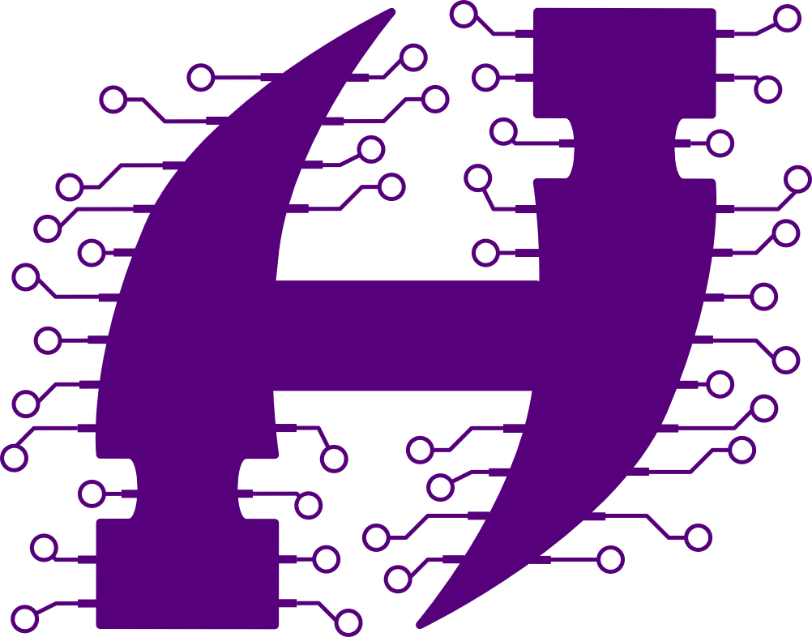
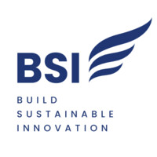
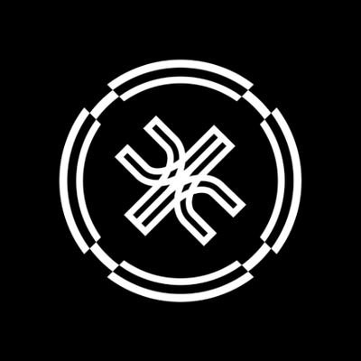

Leonardo Tonelli
MSc Statistics Student | Data Scientist | ML Researcher
I'm a statistics and machine learning student currently pursuing my Master's degree at EPFL in Lausanne. Originally from Avezzano, a small city in central Italy's Abruzzo region, I completed my undergraduate studies at Bocconi University in Milan with highest honors (110/110 Cum Laude).
My journey spans from research in statistical physics methods in neural networks to practical applications in data science. In the future, I would love to be in a position that bridges the gap between academic research and real-world impact, whether in industry or academia.

Currently...
-
📚 Studying
- Master's Coursework at EPFL: Diving deep into Statistical Computation, Statistical Inference, Mathematics of Data, Statistical Machine Learning, Deep Learning, and Deep Reinforcement Learning
- Focus: Expanding my statistical knowledge while exploring its intersection with computer science, optimization and data science
- Extras: French language at EPFL language center!
-
💼 Professional Goals
- Seeking Opportunities: Looking for Summer 2026 experience in Data Science, Machine Learning, or Data Analytics either in industry or academia. Ready to learn as much as possible from real-world challenges and research investigations.
- Career Aspiration: Building toward a career as a researcher or data scientist, either in industry or academia, where I can contribute to impactful projects at the intersection of statistics and machine learning
-
🔬 Recent Accomplishments
- Completed Bachelor's degree with highest honors (110/110 Cum Laude) at Bocconi University
- Successfully completed exchange semester at NTU Singapore, amazing experience both personally and academically.
- Finalized my thesis on Replicated Approach to studying the Binary Perceptron problem.
Education
Expected Coursework: Statistical Computation, Statistical Inference, Mathematics of Data, Statistical Machine Learning, Deep Learning, Deep Reinforcement Learning
Advancing my expertise in theoretical and applied statistics, with focus on cutting-edge machine learning methodologies and their mathematical foundations.
Final Mark: 110/110 Cum Laude
Thesis: "Navigating Complex Energy Landscapes: Replicated Approach to the Binary Perceptron"
Supervised by Prof. Saglietti
Scholarship: National scholarship "Fondo Previdenza Mef" (€2,000) based on academic merit (1st year)
Relevant Coursework: Advanced Statistics, Econometrics, Applied Mathematics, Machine Learning, Computer Programming, Computer Science, Big Data and Databases, Game Theory, Finance, Microeconomics, Macroeconomics
Achievement: 90th percentile among 1,179 exchange undergraduate applicants
Relevant Coursework: Business Analytics Consulting, Signal and Noise in Biology, Intelligent Agents
Gained international exposure and introductory knowledge in intelligent agents, quantitative biology, and business analytics in one of Asia's leading technology hubs.
Professional Experience
-
 Research Assistant - Bocconi University
Research Assistant - Bocconi University
Location: Milan, Italy | Period: Sept 2024 - Dec 2024
Conducted statistical analyses on large-scale RCT experimental data combining survey responses and eye tracking measurements. Worked with approximately 1,200 participants generating ~1M raw eye tracking observations.
Collaborating Professors: Maria Cucciniello and Alessandro Romano (Law and Political Sciences Departments)
Methods & Tools: ANOVA, regularization techniques, GLM | Python (pandas, statsmodels, scipy)
-
 AI Solutions Developer / BI Engineer - Obloo Ventures
AI Solutions Developer / BI Engineer - Obloo Ventures
Location: Milan, Italy | Period: Jun - Sept 2024
Developed AI-powered application for transcription, summarization, and topic extraction from audio/video files at a Venture Capital and Private Equity firm (€150M AUM).
Impact: Boosted note-taking efficiency by 70% and tripled value extraction from meetings according to analyst feedback.
Technical Contributions: Implemented and tested RAG architecture on NAS system; automated data inflows
Tech Stack: Docker, Streamlit, Groq, Hugging Face, Git
Featured Projects
-
 Playing Atari with Deep Reinforcement Learning
Role: Team Leader (3-person team) for Hephaestus AI Bocconi association
Coordinated complete replication of DeepMind's landmark 2013 paper by Mnih et al., implementing DQN architecture from scratch. Managed team coordination, implementation strategy, and professional documentation.
Skills Acquired: PyTorch, RL theory, DQN architecture, Gymnasium environment, research leadership, technical writing
Reinforcement LearningDeep LearningTeam Leadership -
 Credit Scoring Model
Credit Scoring Model
Role: Project Lead for Machine Learning course
Led comprehensive study comparing ML algorithm variations for predicting credit card default, specifically addressing dataset imbalance challenges. Research grounded in analysis of 10+ academic papers exploring diverse algorithmic approaches.
Deliverables: Final research paper (available on GitHub) and probability prediction submission
Skills Acquired: scikit-learn, research synthesis, data preparation, resampling techniques, weighted models, feature engineering
Machine LearningImbalanced DataResearch -
 University Recommendation System - BSI Bocconi
Role: Project Leader (4-person team)
Designed and developed web application to help Bocconi undergraduates choose exchange universities. Built comprehensive dataset incorporating ranking, climate, safety, entry scores, and program availability. Developed personalized recommendation algorithm matching student profiles with optimal universities.
Impact: Created sustainable tool for future student cohorts, improving exchange decision-making process
Web DevelopmentRecommendation SystemsData Collection -
 Junction Hackathon 2023
Achievement: Qualified for global event by winning Milan mini-hackathon (Sept 25, 2023)
Developed sustainability-focused solution to enhance trust in Large Language Models. Explored RAG architecture and created Python program indexing websites with reliability scores to ensure trustworthy data sources.
Focus: AI ethics, information verification, RAG implementation
RAG ArchitectureLLM TrustHackathon Winner -
Discrete Function Optimization
Developed optimization framework for minimizing discrete functions using simulated annealing with MCMC (Metropolis-Hastings) for state transitions. Compared performance with greedy algorithms and enhanced efficiency through stochastic processes.
Techniques: Simulated annealing, MCMC, algorithm comparison, performance optimization
OptimizationMCMCAlgorithms
Skills & Expertise
Programming Languages
- Python (Intermediate)
- R (Intermediate)
- SQL (Intermediate)
- LaTeX (Intermediate)
Python Libraries
- Data: Pandas, NumPy, SciPy
- ML: PyTorch, scikit-learn
- Stats: statsmodels
- NLP: Spacy
- Viz: Seaborn, Matplotlib
Technical Tools
- Git (Version Control)
- Docker (Containerization)
- Streamlit (Web Apps)
- Groq, Hugging Face (AI/ML)
Languages
- Italian (Native)
- English (Advanced - IELTS C1, Band 8)
- French (Beginner - B1 Course)
- Spanish (Beginner)
Statistical Methods
- ANOVA & Regression
- GLM & Regularization
- Econometrics
- Machine Learning
- Deep Learning
University Involvement
-
Hephaestus Applied AI
Role: Research Project Head | Leading research initiatives in applied artificial intelligence
-
Bocconi Students for Machine Learning
Role: Research Member | Contributing to ML research projects and knowledge sharing
-
BSI Bocconi
Role: Project Leader | Managing student initiatives and technology projects
-
AI & Neuroscience Student Association
Role: Member | Exploring the intersection of AI and neuroscience